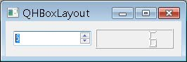
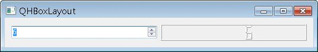
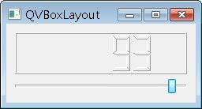
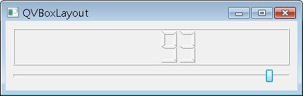

設計視窗程式的人都知道，在視窗程式中最麻煩也最難的就是版面配置，每次都為了元件的位置擺放在傷腦筋，像是
使用 Signal 與 Slot（使用拉桿改變LCD數字）的範例中，會使用setGeometry()來設定Widget於parent中的XY位置與長寬，但這樣在您視窗縮放時，當中的元件位置並不會適當的自我調整大小、位置（或像是字型大小自動調整之類的），以配合視窗縮放展現適當的觀感。
所以視窗程式的解決方案都會提供一些現成的版面配置方式，讓您可以不必自行配置元件位置，以下直接看例子，使用QHBoxLayout進行元件的版面配置，這可以讓您以水平的方式來擺放元件：
#include <QApplication>
#include <QWidget>
#include <QSpinBox>
#include <QLCDNumber>
#include <QHBoxLayout>
int main(int argc, char *argv[]) {
QApplication app(argc, argv);
QWidget *window = new QWidget;
window->setWindowTitle("QHBoxLayout");
window->resize(250, 50);
QLCDNumber *lcd = new QLCDNumber;
QSpinBox *spinBox = new QSpinBox;
spinBox->setRange(0, 99);
QObject::connect(spinBox, SIGNAL(valueChanged(int)),
lcd, SLOT(display(int)));
QHBoxLayout *layout = new QHBoxLayout;
layout->addWidget(spinBox);
layout->addWidget(lcd);
window->setLayout(layout);
window->show();
return app.exec();
}這個程式中，沒有自行設定元件的parent/child關係，也沒有設定元件的大小、位置，而直接使用QHBoxLayout將元件加入，這會把 QHBoxLayout及其管理的元件設成程式中window的子元件，並依QHBoxLayout版面配置策略自動水平配置元件，一個執行的的畫面如下所 示
：

元件會自動填滿視窗，如果您拉動視窗，則當中的元件也會適當的變動大小：

QHBoxLayout中元件的加入順序，就是水平配置由左至右顯示的順序，至於QVBoxLayout的使用方式則與QHBoxLayout類似，以使用 Signal 與 Slot（使用拉桿改變LCD數字）中的例子來說，可以改用QVBoxLayout來配置元件位置：
#include <QApplication>
#include <QWidget>
#include <QSlider>
#include <QLCDNumber>
#include <QVBoxLayout>
int main(int argc, char *argv[]) {
QApplication app(argc, argv);
QWidget *window = new QWidget;
window->setWindowTitle("QVBoxLayout");
window->resize(240, 100);
QLCDNumber *lcd = new QLCDNumber;
QSlider *slider = new QSlider(Qt::Horizontal);
slider->setRange(0, 99);
slider->setValue(0);
QObject::connect(slider, SIGNAL(valueChanged(int)),
lcd, SLOT(display(int)));
QVBoxLayout *layout = new QVBoxLayout(window);
layout->addWidget(lcd);
layout->addWidget(slider);
window->show();
return app.exec();
}
程式中可以看到，在建立版面配置物件時，也可以直接指定要實施版面配置的對象。執行的畫面如下所示：

拉動時的畫面如下所示：
